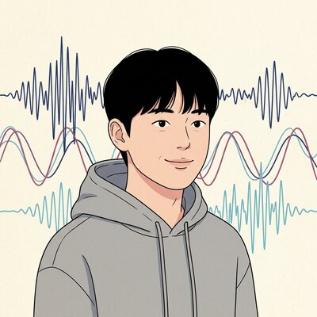
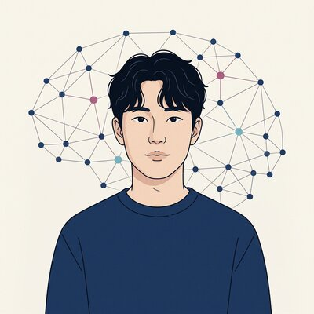
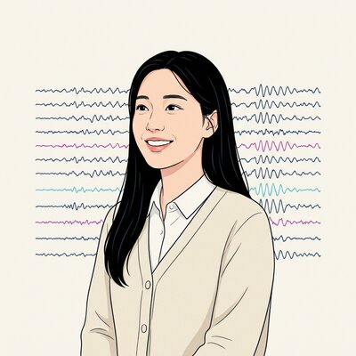
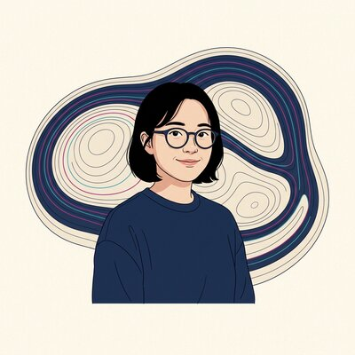

One PI, four students, one collective interest — asking how physical models of the brain can help us understand and eventually adjust its dynamics.
Associate Professor · Dept. of Scientific Computing, Pukyong National University
Jiyoung Kang leads the Brain Theory Group at PKNU. Trained in theoretical physics at the University of Tsukuba, her work develops dynamic causal models, energy-landscape analyses, and neural-plasticity frameworks that connect biophysical simulation to human neuroimaging data.
"Carpe diem — Übung macht den Meister."

BS · MS candidate

BS candidate

BS candidate

BS candidate
If any of the research pillars resonate with you, please write. We work across theoretical neuroscience, computational modeling, and neuroimaging analysis.